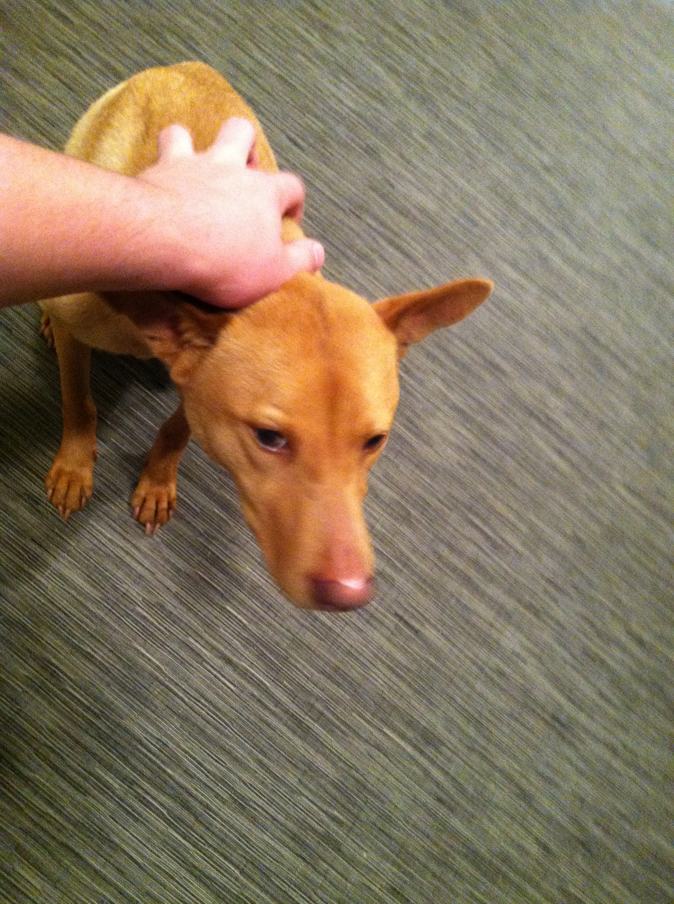
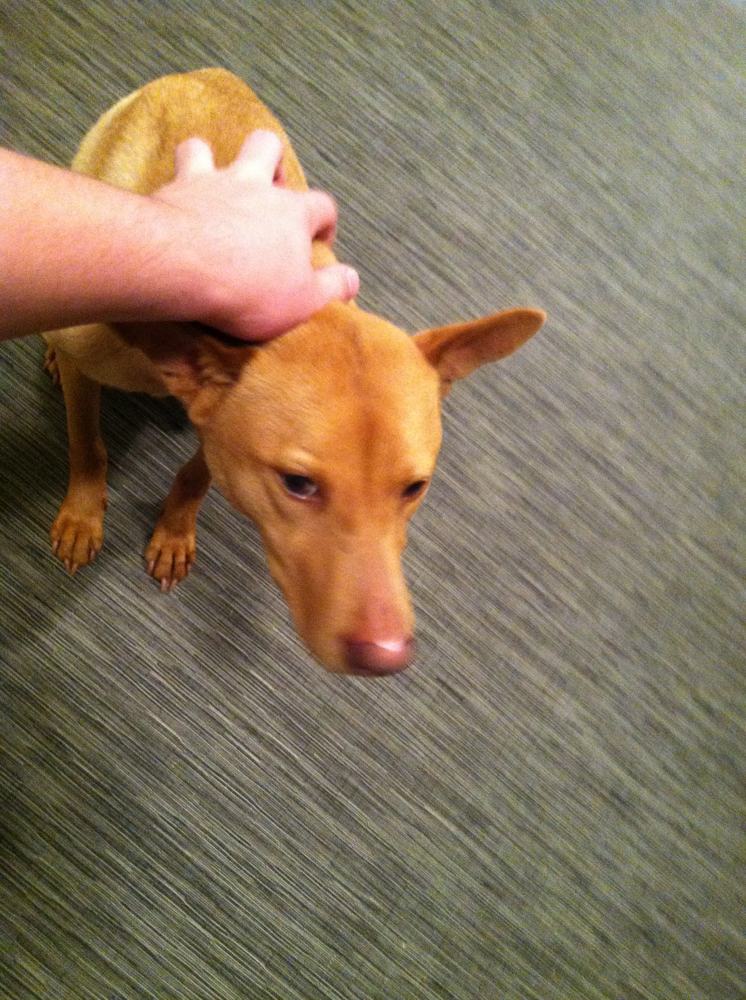

Me and my sister are around five years old. We began our lives on the streets of Hong Kong. We were young so we both don't really remmeber much, but I do remember our mother being hit by a car. Shortly afterwards we were picked up and brought to the Hong Kong Dog Rescue. It is similar to a pound except no dogs are put down. We stayed there for a month until a kind man came nad picked us up. He brought us home to his two young children who named us Lily and Luna. Me, I'm Luna, the one with the pink nose. While our life story may seem depressing both me and my sister are now completely content with our lives in the US. We are so glad we were picked up by a nice family!